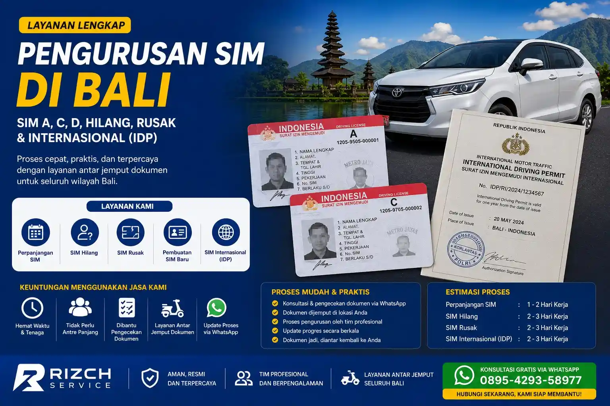

Jasa Pengurusan SIM di Bali
Rizch Bali menyediakan layanan jasa pengurusan SIM di Bali untuk membantu proses pembuatan SIM baru, perpanjangan SIM, serta bantuan administrasi SIM dengan proses yang lebih praktis dan efisien.
Layanan ini membantu masyarakat Bali maupun pendatang yang ingin mengurus dokumen SIM tanpa bingung dengan prosedur administrasi yang berlaku.
Layanan Pengurusan SIM di Bali
Rizch Bali membantu berbagai kebutuhan pengurusan SIM di Bali sesuai kebutuhan pengguna kendaraan bermotor.
Layanan SIM yang Tersedia
- Pembuatan SIM Baru — bantuan proses pembuatan SIM A (mobil) dan SIM C (motor) dari awal hingga selesai.
- Perpanjangan SIM — pengurusan perpanjangan masa berlaku SIM sebelum atau setelah habis.
- Bantuan Administrasi SIM — pendampingan kelengkapan dokumen dan pengisian formulir.
- Konsultasi Pengurusan SIM — penjelasan detail mengenai syarat, prosedur, dan jenis SIM yang sesuai kebutuhan.
- Pendampingan Pengurusan SIM — didampingi selama proses di kantor Satpas atau lokasi pengurusan.
Jenis SIM yang Umum Diurus
- SIM A untuk kendaraan mobil pribadi. Minimal usia 17 tahun.
- SIM C untuk kendaraan sepeda motor. Minimal usia 16 tahun.
- SIM internasional untuk kebutuhan perjalanan ke luar negeri.
Baca juga: Rizch Service
Syarat Pengurusan SIM di Bali
Sebelum melakukan pengurusan SIM, pastikan dokumen persyaratan sudah lengkap agar proses berjalan lebih cepat dan lancar.
Dokumen yang Perlu Disiapkan
- KTP asli dan fotokopi yang masih berlaku.
- SIM lama asli untuk proses perpanjangan (jika ada).
- Pas foto terbaru sesuai ketentuan ukuran dan latar belakang.
- Surat keterangan sehat dari dokter atau fasilitas kesehatan yang ditunjuk.
- Surat kuasa jika pengurusan dilakukan oleh pihak lain atau biro jasa.
Proses Pengurusan SIM di Bali
Proses pengurusan SIM di Bali dilakukan melalui beberapa tahapan administrasi di Satuan Penyelenggara Administrasi SIM (Satpas) sesuai ketentuan Korlantas Polri.
| Tahapan | Keterangan | Catatan |
|---|---|---|
| Persiapan Dokumen | Pengecekan kelengkapan dokumen | Pastikan data sesuai |
| Verifikasi Administrasi | Pemeriksaan data dan identitas | Dilakukan sesuai prosedur |
| Proses Pengurusan SIM | Tahapan administrasi SIM | Menyesuaikan jenis layanan |
| Penyelesaian Dokumen | Dokumen SIM selesai diproses | Siap digunakan |
| Hasil Akhir | Dokumen SIM sesuai kebutuhan | Legal dan resmi |
Biaya Administrasi Pengurusan SIM
Proses pengurusan SIM di Bali melibatkan beberapa komponen biaya administrasi yang dibayarkan ke pihak berwenang. Biaya-biaya tersebut meliputi:
Rincian Biaya Administrasi
- Biaya pembuatan SIM baru — dikenakan untuk penerbitan dokumen SIM.
- Biaya perpanjangan SIM — untuk pembaruan masa berlaku SIM yang sudah habis.
- Biaya tes kesehatan dan psikologi — dilakukan di fasilitas kesehatan atau tempat yang ditunjuk.
- Biaya fotokopi dan administrasi — untuk kelengkapan dokumen pendukung.
- Biaya layanan jasa — jika menggunakan bantuan biro jasa untuk pengurusan.
Keuntungan Menggunakan Jasa Pengurusan SIM di Bali
Menggunakan jasa pengurusan SIM membantu proses administrasi menjadi lebih praktis terutama bagi masyarakat yang memiliki aktivitas padat.
- Membantu proses administrasi lebih praktis.
- Mengurangi kebingungan saat pengurusan dokumen.
- Mempermudah konsultasi terkait kebutuhan SIM.
- Pendampingan pengurusan SIM lebih nyaman.
- Layanan pengurusan SIM untuk wilayah Bali.
Baca juga: Rizch Service dan Rizch Service
Butuh Bantuan Pengurusan SIM di Bali?
Rizch Bali siap membantu pengurusan SIM di Bali mulai dari pembuatan SIM baru, perpanjangan SIM, hingga konsultasi administrasi SIM dengan proses yang lebih praktis dan terpercaya.
Konsultasi via WhatsAppFAQ - Pertanyaan Umum
Jasa pengurusan SIM di Bali adalah layanan bantuan administrasi untuk pembuatan SIM baru, perpanjangan SIM, dan kebutuhan dokumen SIM lainnya.
Ya, Rizch Bali membantu proses perpanjangan SIM di Bali sesuai prosedur dan persyaratan yang berlaku.
Dokumen yang biasanya diperlukan meliputi KTP, SIM lama untuk perpanjangan, dan dokumen pendukung lainnya sesuai kebutuhan administrasi.
Ya, layanan pengurusan SIM tersedia untuk berbagai wilayah di Bali termasuk Denpasar dan sekitarnya.
Ya, Rizch Bali menyediakan konsultasi terkait pengurusan SIM agar proses administrasi lebih mudah dipahami.